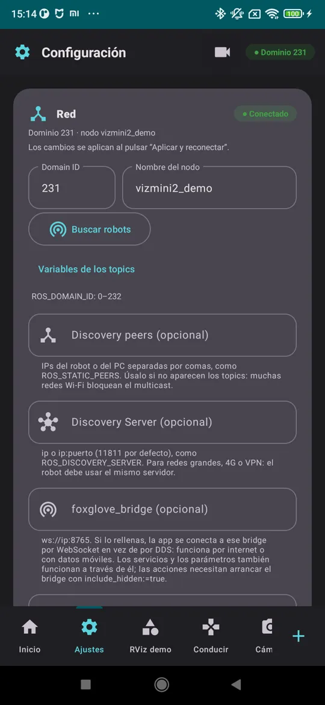

Red
Ajustes → Red. Los cambios se aplican al pulsar Aplicar y reconectar.

- Domain ID
0–232, como
ROS_DOMAIN_ID. Tiene que coincidir con el del robot. Por defecto, 0. Buscar robots, a su lado, escucha unos segundos en todos los dominios y muestra los que tienen nodos y sus IPs: toca uno para conectarte a él.- Nombre del nodo
El nombre del nodo de la app en la red (
vizmini2por defecto). Letras, números y_; no puede empezar por un número.- Discovery peers (opcional)
Direcciones IPv4 del robot o del ordenador, separadas por comas, como
ROS_STATIC_PEERS. Úsalos cuando la Wi-Fi descarta el tráfico multicast y el robot no aparece.- Discovery Server (opcional)
ipoip:puerto(11811 por defecto), comoROS_DISCOVERY_SERVER. Para redes grandes, 4G o VPN. El robot tiene que usar el mismo servidor.- foxglove_bridge (opcional)
ws://ip:8765. Si lo rellenas, la app se conecta por WebSocket a un foxglove_bridge que corra en el robot, en vez de por DDS. Funciona entre routers, por internet o con datos móviles y con cualquier middleware de ROS 2 (Fast DDS, Cyclone DDS, Zenoh…), porque de la parte ROS se encarga el bridge. Arráncalo en el robot conros2 launch foxglove_bridge foxglove_bridge_launch.xml. Los topics, la TF, la vista 3D, las cámaras, las gráficas y los indicadores funcionan igual, y el teleop, los botones y los sliders publican a través de él. Los servicios y los parámetros también se llaman a través de él (las pestañas Services y Parámetros, los botones de servicio). Las acciones funcionan si el bridge se arranca coninclude_hidden:=true, porque usan topics y servicios ocultos. La lista de nodos, el grafo de nodos y lifecycle salen del grafo de conexiones del bridge. La barra de arriba pone Bridge en vez del dominio.- Router de Zenoh (opcional)
tcp/ip:7447(también valen los endpointsudp/,tls/yquic/). Para robots que usan Zenoh (rmw_zenoh_cpp) en vez de DDS: la app se conecta al router de Zenoh del robot, el que se arranca conros2 run rmw_zenoh_cpp rmw_zenohd, y funciona como un nodo más. Todo va igual que por DDS: los topics, la TF, la vista 3D, las cámaras, las gráficas, el teleop, los botones y los sliders, los servicios, los parámetros, las acciones, lifecycle y la lista y el grafo de nodos. También llegan los topics que se publican una vez para los que lleguen después (/tf_static,/map,/robot_description). Como va por TCP, funciona también entre routers o por una VPN, siempre que el móvil llegue al puerto del router. Usa esto o foxglove_bridge, no los dos. La barra de arriba pone Zenoh y el dominio.- Interfaces de red permitidas (opcional)
IPs o nombres de interfaz (
wlan0…). Vacío = todas.- Formato de servicios
Cómo se empaquetan las llamadas a servicios y, con ellas, las acciones, los parámetros y lifecycle: cada middleware de ROS 2 lo hace a su manera. Automático (por defecto) mira el DDS del servidor de cada servicio y funciona con robots que usan
rmw_fastrtps_cppormw_cyclonedds_cpp, incluso mezclados en la misma red. Los topics funcionan con los dos en cualquier caso. Elige Fast DDS o Cyclone DDS solo si con Automático los servicios no responden, por ejemplo con otro DDS que use uno de esos formatos. Con Zenoh o foxglove_bridge da igual.- Recordar robots de esta red
La próxima vez se contacta directamente con los robots que la app ya ha visto, aunque la Wi-Fi deje de pasar el tráfico multicast: hasta 16 por dominio (se usan 8 a la vez), y se olvidan a los 30 días. Toca uno para olvidarlo ya.
- Variables de los topics
Escribe
${nombre}en cualquier topic de cualquier pestaña (por ejemplo${ns}/scan) y pon aquí su valor (ns=/robot1): todas las pestañas y widgets lo siguen. Útil con varios robots iguales.
Comprobar red
Comprobar red te dice qué ve el móvil y qué hacer:
Todo parece correcto: se ven otros participantes en tu dominio.
Solo: solo se ve este móvil. Revisa el dominio, añade Discovery peers o pide que desactiven el IGMP snooping o el aislamiento de clientes en el router.
También muestra la IP del móvil, los peers en uso y cada participante visible con su IP.
Reiniciar
Reiniciar ROS 2 cierra y vuelve a abrir el nodo de la app sin cambiar ningún ajuste, y Reconectar en Inicio hace lo mismo. Útil después de reiniciar el robot.
En el PC
Los mismos campos están en Configuración → Red (el último elemento de la barra lateral), con Buscar robots, Aplicar y reconectar y Reiniciar ROS 2; Variables de los topics tiene su propia tarjeta en la misma página. El estado de la conexión está arriba en la barra lateral. No hay Comprobar red ni el interruptor Recordar robots: para comprobar la red desde una terminal, mira Solución de problemas.
La primera vez que arranca, la app del PC toma ROS_DOMAIN_ID, ROS_STATIC_PEERS y
ROS_DISCOVERY_SERVER de su entorno (por ejemplo, la terminal donde ejecutas
ros2 run vizmini2 vizmini2, o en Windows las variables de entorno de tu usuario). Después se
usan los ajustes guardados en Configuración.